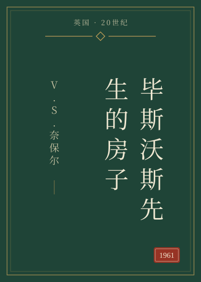
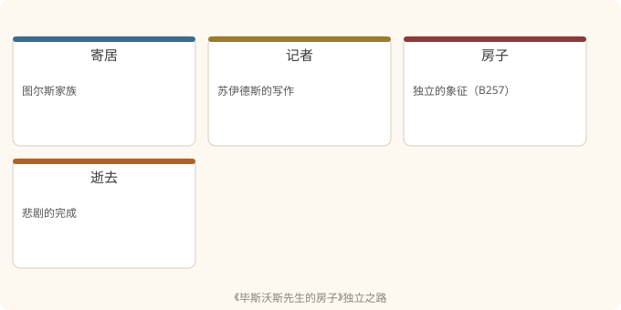

毕斯沃斯先生的房子
一、基本信息
| 作者 | V.S.奈保尔 |
|---|---|
| 成书/出版 | 1961年出版（Britannica：A House for Mr Biswas (1961)） V.S. Naipaul — Encyclopaedia Britannica（百科全书） |
| 国别/地区 | 英国 |
| 时代 | 现当代 · 20世纪 |
| 体裁 | 长篇小说 |
| 语言 | 英语 |

《毕斯沃斯先生的房子》独立之路（主题·结构图）
二、创作背景
Britannica：'His fourth novel, A House for Mr Biswas (1961), also set in Trinidad, was a much more important work and won him major recognition'（第四部小说、仍以特立尼达为背景，使他获得重要认可——B257）。
Britannica：'It centres on the main character's attempt to assert his personal identity and establish his independence as symbolized by owning his own house'（以拥有自己的房子象征人格独立——B257）。
三、内容脉络
毕斯沃斯一生寄人篱下（图尔斯家族）——从记者到自建房屋（通说待核）。
房子落成不久即逝——独立的悲剧性完成（通说待核）。
四、主要人物表
| 人物 | 身份 | 说明 |
|---|---|---|
| 毕斯沃斯 | 记者 | 寻求独立的人（B257） |
| 图尔斯家族 | 婆家 | 印度裔大家庭（通说待核） |
五、主题与艺术特点
- '房子'作为身份与独立的象征（B257）。
- 印度裔特立尼达人的殖民经验（B257 语境）。
- 反英雄的喜剧叙事（通说）。
六、影响与评论
- Britannica：使其获得重要认可（major recognition）（B257）。
V.S. Naipaul — Encyclopaedia Britannica（百科全书） - 后殖民英语小说的经典（通说待核）。
V.S. Naipaul — Encyclopaedia Britannica（百科全书）
七、阅读建议
难点
- 特立尼达印度社群词汇。
- 体量与松散结构。
- 《毕斯沃斯先生的房子》（译林出版社/南海出版公司版本，通说待核）。
对照《生命册》：两种'房子'的寓言。
八、待核实
- 图尔斯家族（Tulsis）细节核对。
- 自传性（作者父亲生平说）待核。
- 1961年出版（McGraw-Hill/André Deutsch说）核对。
本页主要来源
V.S.奈保尔的其他收录作品：毕斯沃斯先生的房子